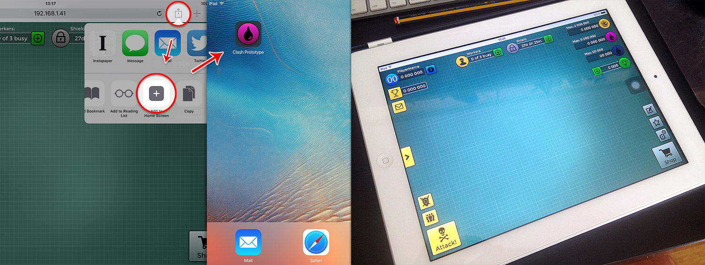
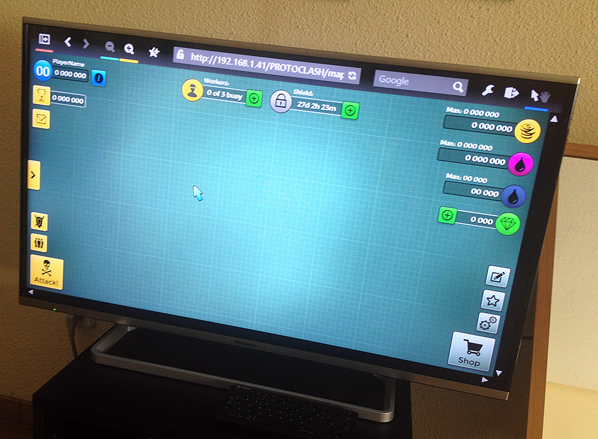

Clash of Clans
Learning Prototype
Exploration, Analysis, Tool selection, Additional HTML/CSS coding
My story with Clash of Clans goes back to 2012 when I joined eRepublik Labs to help them with all things UX. Today I'm free from the pressure of doing the same things Supercell did on the game for our own project, so I decided to dedicate some of my time to try new things... this is the result.
Goals
- Learn: Acquiring a better understanding of what takes to build interactive prototypes for games.
- Workflow: try to build an organised work process.
- Skill - Tool: Getting to know the tool's virtues and shortfalls.
- Skill - Acumen: Acquiring and applying knowledge that could be reused and strengthened in periodic practice.
- Visibility: creating a portfolio piece that can showcase thinking and working process.
Assumptions
- No time tracking: being free from the pressure of working a number of hours and not having tangible or concrete results.
Enjoying: sine qua non condition, if the struggle is not interesting and I'm not learning during the process, then I'll do better use of my time.
Process
Step 1.
Play & Exploration
Play / Explore
I've been playing Clash since October 2012 so I'm no stranger to all its quirks, already had a good idea of where everything was placed inside the game, nevertheless I decided to validate my knowledge and do remove any unconfirmed memories carried from other games or biases from "where things should be".Screen Mapping
That helped me in selecting the most interesting screens and interactions as the initial prototype scope.
Step 2.
Analysis
Element groups
Began working with the "Home Village" interface since its where players spent most time, its also the simplest UI in the whole game, arguably I consider it to be the game's "main screen". Identified some of the element groups that were repeatedly reused with some kind of variations.Element Patterns
Separated the patterns into their basic elements, Identified the elements properties regarding feedback and action:- Information (dynamic status / static identification): non-changing text labels, dynamic labels that displayed quantities, text strings or transitory feedback (player name, resources, gems/xp found from trees, bushes, etc.)
- Actionable elements: 3 kinds of buttons, game elements.
- Affordances: buttons shape, borders, shadows, buildings arrows and pulsing animation.
Feedback: pulsing animation, flying grass, gold/elixir streams, buttons.
Navigation and Interaction patterns
Navigation Elements/controls and screen flows, displaying of: Modals windows, full screens changes, confirmations, dialogues, menus, feedback.
Took note of the usage of Visual & Auditive feedback: animation of buttons, dynamic text labels, windows, modals, images/icons, in-game elements, messages, etc.
It would be better if you played the game and noticed the huge amount of feedback it gives the player in absolutely every interaction, neat work.
Step 3.
Tool Selection & Learning
Selection - Prototyping tool listing and evaluation:
Went through every prototyping tool known to me and some new I discovered, used this initial conditions for the selection:- Must run in OS X or in a browser
- Free option or low budget
- Prototypes must be Multiplatform
- Prototypes must be easy to distribute
Results must be easy to modify / tweak
During the screening list grew to include:
- Must be available offline
- Must not depend on "viewer" apps
- Must have a moderate to easy learning curve
Must not require buying any kind of licenses.
This left out almost every online prototyping platform, most of them are pay-per-use, have a steep learning curve, have a dependency on a dedicated viewer app or do not include learning something new and useful.
My choice was HTML5 + CSS3.
Test #1 - Coding
Learn - jQuery at Codecademy: before diving into the course I didn't had a clear idea of what was jQuery or what I can do with it, knowing that it was only a really popular Javascript library; My current opinion very simple: any professional that has a decent grasp of html and css must know jQuery. Period.
Try & Fail: Decided to code by hand the Shop, Setting and Options buttons from the Home Base UI, spent a considerable time writing styles and positioning the controls within the browser. Too much time, and sadly too abstract for doing what I have in mind.
Pros and cons: PROS: customisable appearance, resulting prototype that respond to the device's configuration (w/h) and user interaction. CONS: starting from scratch is painful, too much time invested in thinking how to code right the css classes, bugs aplenty if you don't, too much effort in coding and too little in solving the design problem.
Pivot:
Two (2) days dedicated to consideration, no design or coding work. It was like moving between hope and despair, thinking of using 3rd party libraries that allow heavy canvas manipulation and positioning but at the cost of learning a lot and moving slowly.
Then decided to consider Macaw, it is a prototyping desktop application that lets you work in a visual environment, it generates HTML5/CSS3 documents as a final result and they are ready for publishing.
Macaw is a really useful tool for properly learning HTML5 & CSS3; in fact it did its job as a learning tool so well that it almost stays out of the prototyping tools list! Today I'm quite confident about hitting the code editor and whipping a website template totally on my own thanks to most of the learning I did in the past with Macaw. Obliged.
Test #2 - Macaw, The Experiments
Began by freely playing with the tool, having made a previous analysis of the elements, patterns and interactions I had a good idea of the things I could try.
Tried styling the buttons, labels, frames, changing the element's appearance on user interaction, visual feedback, etc.
Step 4.
Build the Prototype.
1. Initial build
Target device analysis / responsive breakpoints:
Decided to go with 1 single resolution breakpoint at 800 pixels, that would require working out 2 different sizes for every element in the interface.
Discovered a few positioning and element grouping quirks, once solved and devised a workflow it resulted in an increase of around 50% of work (not 90%)Choosing the best way to replicate the UI:
Tried different approaches and chose to create 1 HTML document for every unique interface in the game. For content that seemed to be repeated like lists of messages, events or buttons opted to create separate documents for each and linking them inside the unique interfaces using iframes (e.g. the shop, items categories and items list).Adjusting the Scope and Fidelity
Scope: As the prototyping work progressed I discovered what was possible with the tool, what would need more work and what required opening a code editor to give the final tweaks to the code. Finally decided to reduce the scope to prototyping the game's most basic aspects:
- The "Home Village" Interface:
Included: all buttons but only Shop and "Attack opponent" interactions are working, empty dummy text labels and representative icons. Left out: no progress bars, no animations, no sound, no small screen sizes (mobile phones). - The "Attack opponent" screen flow:
Included: full-screen, all buttons, icons and information labels with dummy information. Left out: Artwork for both panels, the right panel's single player map interaction. - The "Shop" screen flow:
Included: full-screen, all buttons from the shop categories, resource information labels and icons, selecting any category navigates to a generic product list. Specifict product list can be accessed from the "Home Village" by the green plus buttons. Left out: Specific product listing, back button from the product listing.
- The "Home Village" Interface:
Fidelity: decided work the basic interactions and some more elaborate affordances on the interface elements, for example:
- Buttons: rounded corners, thick dark external borders, internal thin transparent border, colour gradient according to their function and icon meaning, shadows, black texts, icon art in black/grey, square and rectangular shapes, responsive sizes.
- Text labels: white colour, shadows, small/medium text sizes, responsive sizes.
- Icons: Enclosed within circles, icon art in black/grey and related to their required meaning, colour gradient background according to their meaning, no shadows.
Text backgrounds: thin border line, light border for labels that can be influenced through Shop interaction, dark border for labels that are part of the regular gameplay, transparent dark gradient background, no shadow.
2. Final build
- Exporting from Macaw:
Once all work was complete I exported the result with Macaw's "Publish" option, which basically creates the HTML, CSS and JS files. There was still more work to do, some code had to be fixed to make the iframes reach 100% browser height, button hover states and more. Adjusting results:
All this work was made editing the HTML and CSS files previously generated- Favicon: generated multiple favicon files for the prototype and linked it on every main HTML file
- Browser adjustment: added the necessary code for making the prototype run in full screen in iOS Safari when added as an icon to the home screen.
Device testing
- iPad: The prototype runs in any web browser for iOS, tested it successfully in Safari and Chrome. The responsive breakpoints work in landscape and portrait device orientations.
- Desktop Browser: tested it in Safari and Chrome, both running in OS X, breakpoints work when the window's width is scaled, It scales really nice.
Nevertheless... it doesn't look ok for widths smaller than 750px. - SmartTV Browser: tested it in a Panasonic Viera SmartTV, looks perfect and the responsive breakpoint is fired when the Web browser's left menu is displayed or collapsed.
Resources
This is a list of the Icon Libraries from Iconfinder.com that have one or more of the icons employed in the prototype:
- simple-darkcon-1
- faticons-2
- ionicons
- users-android-l-lollipop
- essentials-4
- 48-bubbles
- glypho-free
- typicons-2
- flat-black
- google-material-design-icons
- windows-8-metro-style
- glyphpack
- picol-vector
- ecqlipse2
- sympletts-free-sampler
- watchify-v1-0-32px
- free-98-icons
- wpzoom-developer-icon-set
- world-issues
- ios-7-icons
- christmas-free-icon-pack
- flat-ui-icons-24-px
- material-core
- wirecons-free-vector-icons